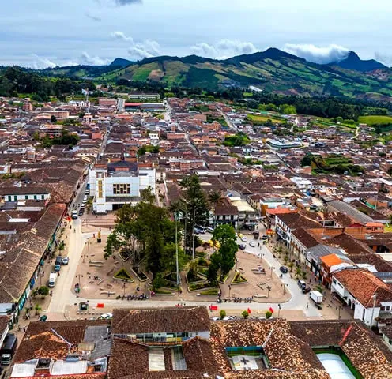
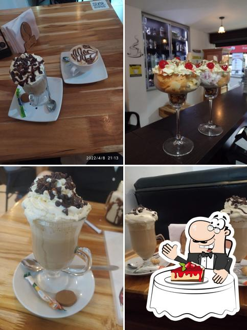

SONSÓN

Que hacer?
- Mirador del Páramo de Sonsón Paramo_de_Sonsón
- Visitar Museos Museo_Casa_de_los_Abuelos
- Centro Histórico del Municipio Balcon_mas_lindo_de_Antioquia
- Oficios tradicionales
- Templos
Museo_fiesta_del_maíz
Museo_de_Arte_Religioso_de_Sonsón
Hotel_el_Tesoro_Sonsón
Entre los oficios tradicionales de Sonsón, encontramos la Fragua o herrería y la elaboración de postres basados en los frutos dados por tierras sonsoneñas.
En Sonsón encontrarás el Templo Nuestra Señora del Carmen, Palacio Episcopal, Convento de las Hermanas Carmelitas y el Santuario de Nuestra Señora de Valvanera; este último es de gran importancia para los habitantes de Sonsón ya que allí se encuentra el famoso cuadro de la Virgen de Valvanera.
Te dejamos este video donde puedes ver un poco de lo que sera tu visita al pueblo mas lindo de Antioquia
Donde comer?
hoteleltesorosonson

Contando con un servicio de alta calidad en un bien inmueble de más de 200 años, rescatando de esta manera tradiciones y costumbres de la cultura paisa.
cocoacafebar_sonson

Pásate por este restaurante. En La Cocoa - Café Bar, te servirán cocinas africana y mexicana. En este lugar, sus clientes pueden probar un espectacular café. Se comenta que aquí el personal es alegre. Podemos recomendar este establecimiento por sus precios justos. La mayor parte del tiempo podrás encontrar aquí una sorprendente atmósfera.
Savalo
Café Savalo lleva las iniciales del señor Saturnino Valencia Loaiza, quien fue cafetero durante toda su vida y quien conoció los secretos para producir el mejor café que hoy disfrutan los sonsoneños y los turistas que visitan este lugar.
